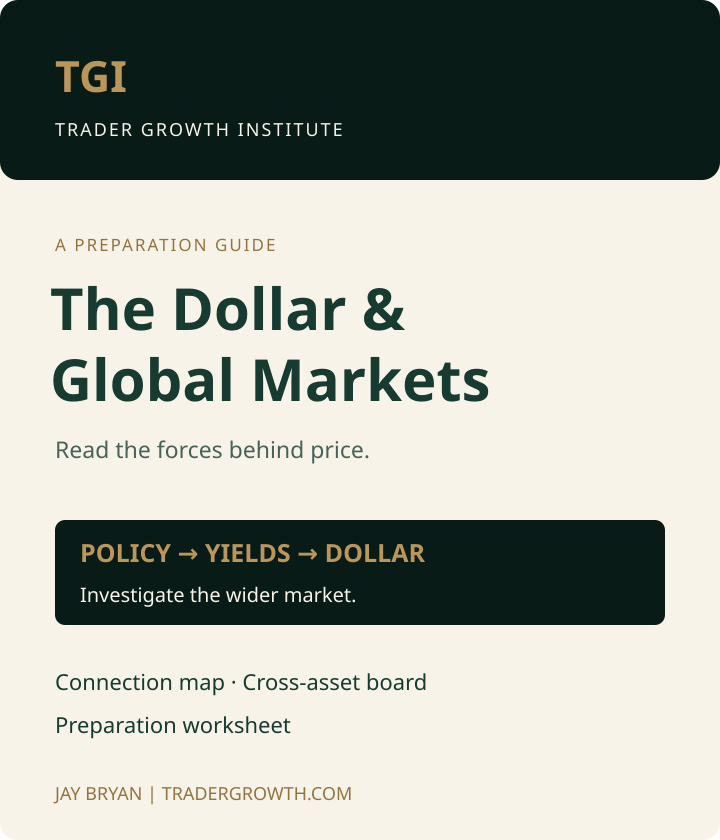

Connect the forces
Explore how policy expectations, yields, and relative returns can influence capital flows.
The U.S. Dollar Is Moving Again — Here’s Why It Matters
One move can raise questions across global markets. Get the free guide that connects the dollar, yields, gold, stocks, oil, and currencies—plus a worksheet to organize what you see.
Join the TGI Intelligence Briefing. The guide link arrives in your welcome email.
Loading the secure email signup…

From the video to your preparation
Explore how policy expectations, yields, and relative returns can influence capital flows.
Look for confirmation and divergence across currencies, gold, equities, and energy.
Separate an interesting macro view from the conditions required to risk capital.
“Macro gives us context. Price gives us evidence.”Jay Bryan · Founder, Trader Growth InstituteEmail me the free guide
Built for disciplined preparation
I’m Jay Bryan, founder of Trader Growth Institute and author of The Daily Zone Command™. TGI connects market context with a structured approach to interpreting price and managing risk.
Meet Jay Bryan